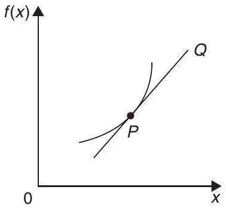
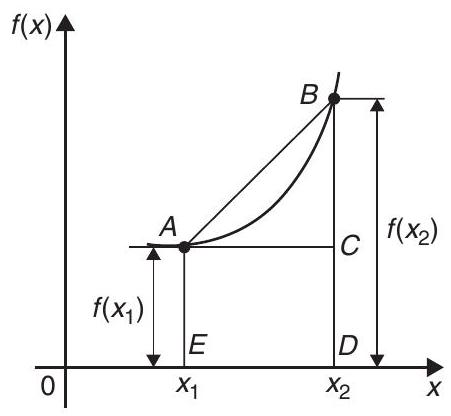
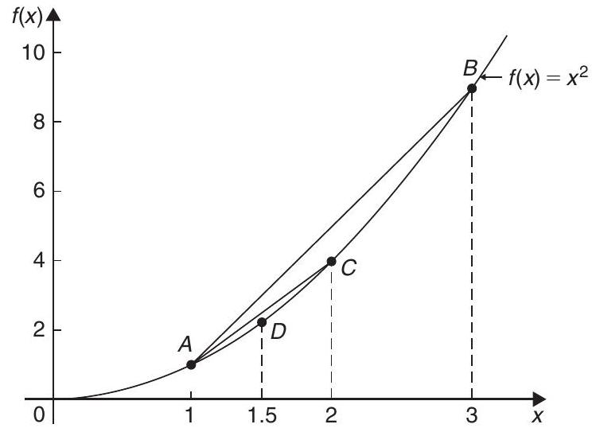
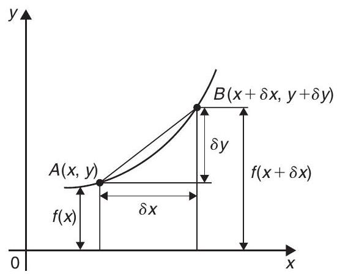
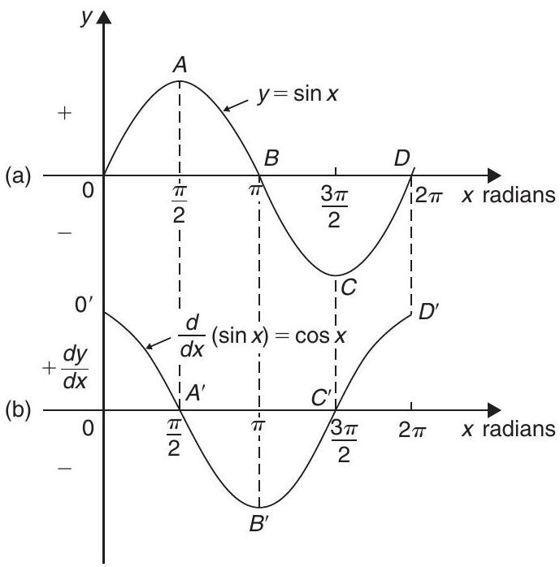
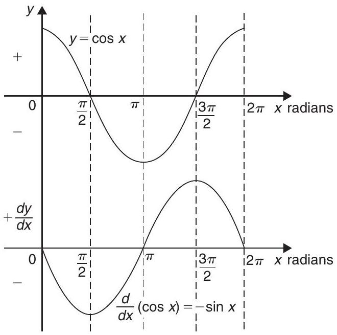
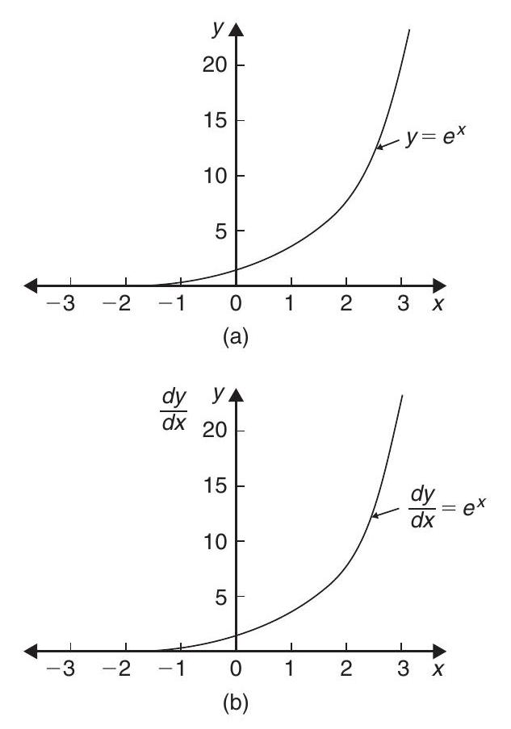
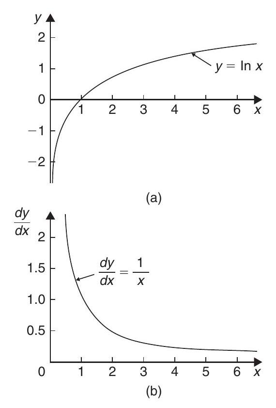

Chapter 34: Introduction to differentiation
34.1 Introduction to calculus
Calculus is a branch of mathematics involving or leading to calculations dealing with continuously varying functions such as velocity and acceleration, rates of change and maximum and minimum values of curves. Calculus has widespread applications in science and engineering and is used to solve complicated problems for which algebra alone is insufficient.
Calculus is a subject that falls into two parts:
- differential calculus (or differentiation),
- integral calculus (or integration).
This chapter provides an introduction to differentiation and applies differentiation to rates of change. Chapter 35 introduces integration and applies it to determine areas under curves.
Further applications of differentiation and integration are explored in Engineering Mathematics (Bird, 2010).
34.2 Functional notation
In an equation such as $y=3x^{2}+2x-5, y$ is said to be a function of $x$ and may be written as $y=f(x)$.
An equation written in the form $f(x)=3x^{2}+2x-5$ is termed functional notation. The value of $f(x)$ when $x=0$ is denoted by $f(0)$, and the value of $f(x)$ when $x=2$ is denoted by $f(2)$, and so on. Thus, when $f(x)=3x^{2}+2x-5$,
and $\quad f(2)=3(2)^{2}+2(2)-5=11$, and so on.
Now try the following Practice Exercise
34.3 The gradient of a curve
If a tangent is drawn at a point $P$ on a curve, the gradient of this tangent is said to be the gradient of the curve at $P$. In Figure 34.1, the gradient of the curve at $P$ is equal to the gradient of the tangent $P Q$.
Figure 34.1
For the curve shown in Figure 34.2, let the points $A$ and $B$ have co-ordinates $\left(x_{1}, y_{1}\right)$ and $\left(x_{2}, y_{2}\right)$, respectively. In functional notation, $y_{1}=f\left(x_{1}\right)$ and $y_{2}=f\left(x_{2}\right)$, as shown.
Figure 34.2
The gradient of the chord $A B$
For the curve $f(x)=x^{2}$ shown in Figure 34.3,
Figure 34.3
- the gradient of chord $A B$ $$=\frac{f(3)-f(1)}{3-1}=\frac{9-1}{2}=4$$
- the gradient of chord $A C$ $$=\frac{f(2)-f(1)}{2-1}=\frac{4-1}{1}=3$$
- the gradient of chord $A D$ $$=\frac{f(1.5)-f(1)}{1.5-1}=\frac{2.25-1}{0.5}=2.5$$
- if $E$ is the point on the curve $(1.1, f(1.1))$ then the gradient of chord $A E$ $$=\frac{f(1.1)-f(1)}{1.1-1}=\frac{1.21-1}{0.1}=2.1$$
- if $F$ is the point on the curve $(1.01, f(1.01))$ then the gradient of chord $A F$ $$=\frac{f(1.01)-f(1)}{1.01-1}=\frac{1.0201-1}{0.01}=2.01$$
Thus, as point $B$ moves closer and closer to point $A$, the gradient of the chord approaches nearer and nearer to the value 2. This is called the limiting value of the gradient of the chord $A B$ and when $B$ coincides with $A$ the chord becomes the tangent to the curve.
Now try the following Practice Exercise
34.4 Differentiation from first principles
In Figure 34.4, $A$ and $B$ are two points very close together on a curve, $\delta x$ (delta $x$) and $\delta y$ (delta $y$) representing small increments in the $x$ and $y$ directions, respectively.
Figure 34.4
Gradient of chord $\quad A B=\frac{\delta y}{\delta x}$
however, $\quad \delta y=f(x+\delta x)-f(x)$
Hence, $\quad \frac{\delta y}{\delta x}=\frac{f(x+\delta x)-f(x)}{\delta x}$
As $\delta x$ approaches zero, $\frac{\delta y}{\delta x}$ approaches a limiting value and the gradient of the chord approaches the gradient of the tangent at $A$.
When determining the gradient of a tangent to a curve there are two notations used. The gradient of the curve at $A$ in Figure 34.4 can either be written as
In Leibniz notation, $\frac{d y}{d x}=\operatorname{limit}_{\delta x \rightarrow 0} \frac{\delta y}{\delta x}$
In functional notation, $f^{\prime}(x)=\operatorname{limit}_{\delta x \rightarrow 0}\left\{\frac{f(x+\delta x)-f(x)}{\delta x}\right\}$
$\frac{d y}{d x}$ is the same as $f^{\prime}(x)$ and is called the differential coefficient or the derivative. The process of finding the differential coefficient is called differentiation.
Summarizing, the differential coefficient,
34.5 Differentiation of $y=a x^{n}$ by the general rule
From differentiation by first principles, a general rule for differentiating $a x^{n}$ emerges where $a$ and $n$ are any constants. This rule is
When differentiating, results can be expressed in a number of ways. For example,
- if $y=3 x^{2}$ then $\frac{d y}{d x}=6 x$
- if $f(x)=3 x^{2}$ then $f^{\prime}(x)=6 x$
- the differential coefficient of $3 x^{2}$ is $6 x$
- the derivative of $3 x^{2}$ is $6 x$
- $\frac{d}{d x}\left(3 x^{2}\right)=6 x$
34.5.1 Revision of some laws of indices
$\frac{\mathbf{1}}{\boldsymbol{x}^{\boldsymbol{a}}}=\boldsymbol{x}^{-\boldsymbol{a}} \quad$ For example, $\frac{1}{x^{2}}=x^{-2}$ and $x^{-5}=\frac{1}{x^{5}}$
$\sqrt{x}=x^{\frac{1}{2}} \quad$ For example, $\sqrt{5}=5^{\frac{1}{2}}$ and $16^{\frac{1}{2}}=\sqrt{16}= \pm 4$ and $\frac{1}{\sqrt{x}}=\frac{1}{x^{\frac{1}{2}}}=x^{-\frac{1}{2}}$
$\sqrt[a]{x^{b}}=x^{\frac{b}{a}} \quad$ For example, $\sqrt[3]{x^{5}}=x^{\frac{5}{3}}$ and $x^{\frac{4}{3}}=\sqrt[3]{x^{4}}$ and $\frac{1}{\sqrt[3]{x^{7}}}=\frac{1}{x^{\frac{7}{3}}}=x^{-\frac{7}{3}}$
$\boldsymbol{x}^{\mathbf{0}}=\mathbf{1} \quad$ For example, $7^{0}=1$ and $43.5^{0}=1$
Here are some worked problems to demonstrate the general rule for differentiating $y=a x^{n}$.
Now try the following Practice Exercise
34.6 Differentiation of sine and cosine functions
Figure 34.5(a) shows a graph of $y=\sin x$. The gradient is continually changing as the curve moves from 0 to A to B to C to D. The gradient, given by $\frac{d y}{d x}$, may be plotted in a corresponding position below $y=\sin x$, as shown in Figure 34.5(b).
Figure 34.5
At 0, the gradient is positive and is at its steepest. Hence, $0^{\prime}$ is a maximum positive value. Between 0 and A the gradient is positive but is decreasing in value until at A the gradient is zero, shown as $A^{\prime}$. Between A and B the gradient is negative but is increasing in value until at B the gradient is at its steepest. Hence $B^{\prime}$ is a maximum negative value.
If the gradient of $y=\sin x$ is further investigated between B and C and C and D then the resulting graph of $\frac{d y}{d x}$ is seen to be a cosine wave.
Hence the rate of change of $\sin x$ is $\cos x$, i.e.
It may also be shown that
(where $a$ is a constant)
and if $y=\sin (a x+\alpha), \frac{d y}{d x}=a \cos (a x+\alpha)$ (where $a$ and $\alpha$ are constants).
If a similar exercise is followed for $y=\cos x$ then the graphs of Figure 34.6 result, showing $\frac{d y}{d x}$ to be a graph of $\sin x$ but displaced by $\pi$ radians.
Figure 34.6
If each point on the curve $y=\sin x$ (as shown in Figure 34.5(a)) were to be made negative (i.e. $+\frac{\pi}{2}$ made $-\frac{\pi}{2},-\frac{3 \pi}{2}$ made $+\frac{3 \pi}{2}$, and so on) then the graph shown in Figure 34.6(b) would result. This latter graph therefore represents the curve of $-\sin x$. Thus,
It may also be shown that
(where $a$ is a constant)
and if $y=\cos (a x+\alpha), \frac{d y}{d x}=-a \sin (a x+\alpha)$ (where $a$ and $\alpha$ are constants).
Now try the following Practice Exercise
34.7 Differentiation of $e^{a x}$ and $\ln a x$
A graph of $y=e^{x}$ is shown in Figure 34.7(a). The gradient of the curve at any point is given by $\frac{d y}{d x}$ and is continually changing. By drawing tangents to the curve at many points on the curve and measuring the gradient of the tangents, values of $\frac{d y}{d x}$ for corresponding values of $x$ may be obtained. These values are shown graphically in Figure 34.7(b).
Figure 34.7
The graph of $\frac{d y}{d x}$ against $x$ is identical to the original graph of $y=e^{x}$. It follows that
It may also be shown that
Therefore,
A graph of $y=\ln x$ is shown in Figure 34.8(a). The gradient of the curve at any point is given by $\frac{d y}{d x}$ and is continually changing. By drawing tangents to the curve at many points on the curve and measuring the gradient of the tangents, values of $\frac{d y}{d x}$ for corresponding values of $x$ may be obtained. These values are shown graphically in Figure 34.8(b).
Figure 34.8
The graph of $\frac{d y}{d x}$ against $x$ is the graph of $\frac{d y}{d x}=\frac{1}{x}$ It follows that
It may also be shown that
(Note that, in the latter expression, the constant $a$ does not appear in the $\frac{d y}{d x}$ term.) Thus,
Now try the following Practice Exercise
34.8 Summary of standard derivatives
The standard derivatives used in this chapter are summarized in Table 34.1 and are true for all real values of $x$.
| $y$ or $f(x)$ | $\frac{d y}{d x}$ or $f^{\prime}(x)$ |
|---|---|
| $a x^{n}$ | $a n x^{n-1}$ |
| $\sin a x$ | $a \cos a x$ |
| $\cos a x$ | $-a \sin a x$ |
| $e^{a x}$ | $a e^{a x}$ |
| $\ln a x$ | $\frac{1}{x}$ |
Now try the following Practice Exercise
34.9 Successive differentiation
When a function $y=f(x)$ is differentiated with respect to $x$, the differential coefficient is written as $\frac{d y}{d x}$ or $f^{\prime}(x)$. If the expression is differentiated again, the second differential coefficient is obtained and is written as $\frac{d^{2} y}{d x^{2}}$ (pronounced dee two $y$ by dee $x$ squared) or $f^{\prime \prime}(x)$ (pronounced $f$ double-dash $x$). By successive differentiation further higher derivatives such as $\frac{d^{3} y}{d x^{3}}$ and $\frac{d^{4} y}{d x^{4}}$ may be obtained. Thus, if $y=5 x^{4}, \frac{d y}{d x}=20 x^{3}, \frac{d^{2} y}{d x^{2}}=60 x^{2}, \frac{d^{3} y}{d x^{3}}=120 x, \frac{d^{4} y}{d x^{4}}=120$ and $\frac{d^{5} y}{d x^{5}}=0$.
Now try the following Practice Exercise
34.10 Rates of change
If a quantity $y$ depends on and varies with a quantity $x$ then the rate of change of $y$ with respect to $x$ is $\frac{d y}{d x}$. Thus, for example, the rate of change of pressure $p$ with height $h$ is $\frac{d p}{d h}$
A rate of change with respect to time is usually just called 'the rate of change', the 'with respect to time' being assumed. Thus, for example, a rate of change of current, $i$, is $\frac{d i}{d t}$ and a rate of change of temperature, $\theta$, is $\frac{d \theta}{d t}$, and so on.
Here are some worked problems to demonstrate practical examples of rates of change.